Spark Charts > Spark Line > Configuration |
Here, we'll see how to configure the various facets of the chart. We'll see how to:
Let's see each of them one by one. |
| Specifying period blocks for the chart |
FusionWidgets spark line chart allows you to show period blocks on the chart using colored bands. This helps you easily interpret periods on the chart. For example, if we want to show 3 months period block on the chart, we can set: <chart ... periodLength='12' periodColor='CCCCCC' periodAlpha='50'> Here, we've set periodLength='12' as we've specified weekly data. So, 12 data points (i.e., 12 weeks will make 3 months). This will result in: |
| 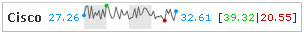 |
Similarly, if you want to highlight 2 months block instead of 3, you can set: <chart ... periodLength='8' periodColor='CCCCCC' periodAlpha='50' ..> This will result in: |
| 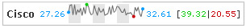 |
| When specifying periods, you just need to make sure that your period length is always less than the number of data points that you've specified, as period length is directly numbered on data points. |
| Configuring open, close, high/low points, values and anchors |
By default, the spark line chart highlights the open, close, high & low points and also shows their value. You can configure the chart to:
To change the color of open, close, high or low points, you can set: <chart ... openColor='0099FF' closeColor='0099FF' highColor='00CC33' lowColor='FF0000' ...> Here, we've colored open and low anchors in blue color, high in green and low in red, as shown below: |
| 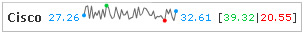 |
You can also opt not to highlight any of these anchors by setting: <chart ... showOpenAnchor='0' showCloseAnchor='0' showHighAnchor='1' showLowAnchor='1' ...> Here, we're just showing high and low anchors, but not open and close anchors, as shown below: |
| 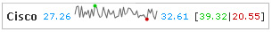 |
Additionally, you can choose which values to show using: <chart ... showOpenValue='1' showCloseValue='1' showHighLowValue='0' ...> In the chart below, we're just showing the opening and closing values, but not high/low value: |
| 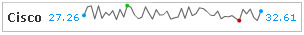 |
| Configuring line & anchor properties |
You can configure the line properties using: <chart ... lineColor='996600' thickness='2' lineAlpha='60' ...> This will result in: |
You can also configure to show all the anchor points and then set their properties using: <chart ... drawAnchors='1' anchorSides='4' anchorRadius='4' anchorColor='666666' anchorAlpha='80' ...> This will result in: |
| 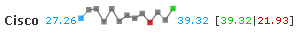 |
| Showing only points but no lines |
You can also show only points in the chart, but no lines using: <chart animation='0' ... lineAlpha='0' drawAnchors='1' anchorSides='4' anchorRadius='4' anchorColor='666666' anchorAlpha='80' ... > Here, we've hidden the line by setting lineAlpha='0'. Also, we've set animation='0' to remove the delay in rendering of anchors.This will result in something like: |
| 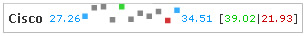 |
| Adding trend-lines/zones |
You can add trend-lines to spark line chart as under. For example, if we had wanted to show previous day's closing figure as a trend-line, we can add the following to XML: |
| <chart ...> ... data .... <trendlines> <line startvalue='32' color='FF0000' thickness='1'/> </trendlines> </chart> |
| This will result in: |
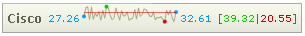 You can make this line appear as dashed using: <line startvalue='32' color='FF0000' thickness='1' dashed='1' dashLen='3' dashGap='3' alpha='100'/> This will result in: |
| 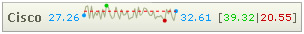 |
You can make slanted trend-lines using: <line startvalue='29' endValue='35' color='FF0000' thickness='1' /> This will result in: |
| 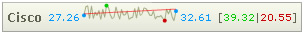 |
Or, you can make the trend appear as a zone by setting: <line startvalue='29' endValue='35' color='FF0000' thickness='1' isTrendZone='1'/> This will result in: |
| 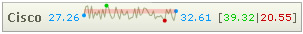 |